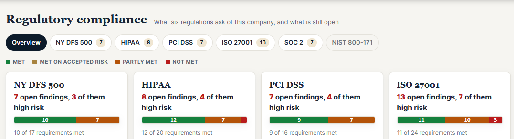

Professional services
Keep security records ready for customer reviews and renewal questionnaires.
See how PCS helpsPistos Information Protection
We help you manage cybersecurity risk and meet your compliance obligations without a large in-house team. Pistos Compliance Sentinel (PCS) identifies which requirements apply, organizes the evidence you need to demonstrate compliance, and helps you track what still needs fixing.

A look inside PCS
When a customer, auditor, or regulator asks how you secure your systems, show them what you checked, when you checked it, and what still needs work.
See how PCS organizes evidence
How PCS works
Use your company profile to see which cybersecurity requirements apply to your organization.
Attach policies, training records and vendor documents. Skopein adds dated checks from supported systems without changing their settings.
Give open items an owner and a due date. After a change, use the next scan or updated record to verify it.
Keep security records ready for customer reviews and renewal questionnaires.
See how PCS helpsTrack applicable safeguards and the documents that support them.
For financial firmsKeep HIPAA risk analyses, training records and security evidence together.
For healthcare teamsOrganize evidence for the CMMC assessment your contract requires.
For defense suppliers
Pistos brings experience advising large institutions to smaller teams that have to maintain the same kind of evidence with fewer people.
About Pistos